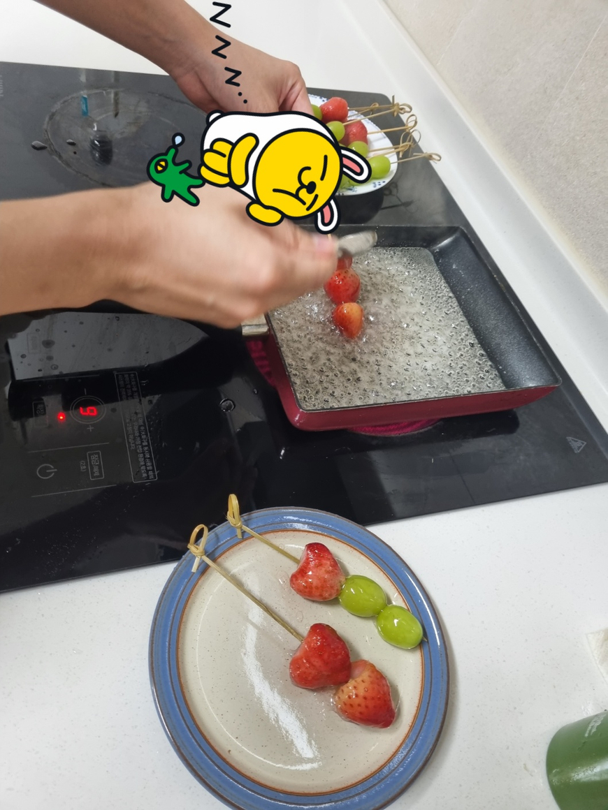
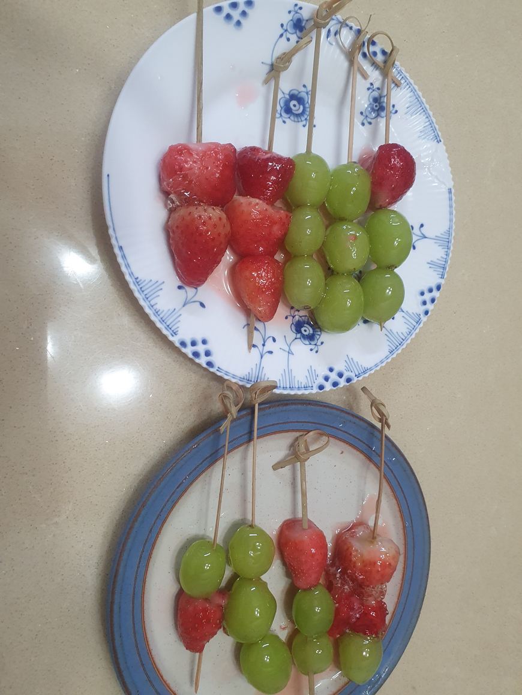

학습자 여러분 혹시 링고 아메 아십니까?
애니메이션 축제같은 곳에서 보이는 이 음식입니다.
심심해서 이걸 만들어보려했지만 너무 귀찮을 것 같아서
'빙탕후루' 라는걸 만들기로 했습니다. 실제 축제에 가서 사먹는게 가장 좋겠지만 사람 많은 곳을 무서워하기때문에... 직접 만듭니다.
1. 재료
청포도, 냉동 딸기, 꼬치를 준비합니다.
2. 꼬치에 과일 꽂기
3. 흑설탕 녹이기
과일에 바르기 위해 설탕을 가열해서 녹입니다. 전 흑설탕을 사용했습니다.
투명한 색의 액체 설탕이 나와야하는데... 안 나오더라구요 그래서 흑설탕은 실패했습니다.
4. 흰 설탕으로 다시 녹이기

흰 설탕으로 녹인 후 설탕물을 아까의 과일 꼬치에 꽂아줍니다.
5. 완성

완성입니다.wwwwww
6. 후기
애니메이션때문에 환상을 가졌던 음식입니다... 그냥 과일에 설탕 뿌린 맛입니다. 다만 식감은 좋았습니다. 겉이 설탕막이 굳고 내부는 과일 식감이라서요.
그래도 다신 안 먹을 것 같습니다. 방바
후원댓글 9개
댓글 9개 ▼